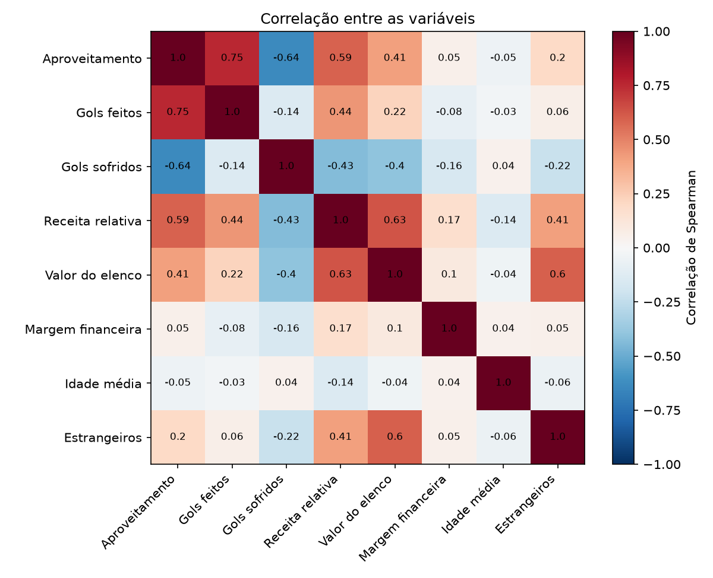
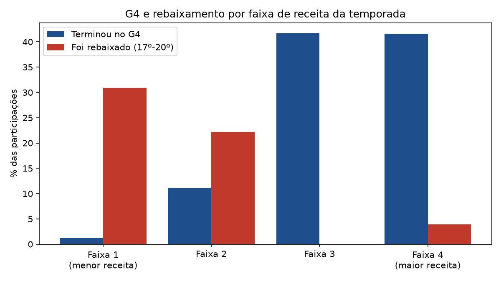

Receita e desempenho esportivo dos clubes no Campeonato Brasileiro Série A (2007-2024)
Marcus Vinicius Rodrigues da Silva, Marcus Filipe dos Santos Mendes
Professor: Alexandre Louzada
Disciplina: Linguagem de Programação - 6º Período
Bacharelado em Sistemas de Informação - Unilasalle RJ
Resumo
O futebol brasileiro movimenta cada vez mais dinheiro, e uma dúvida comum entre torcedores é se o clube mais rico sempre leva vantagem. Neste trabalho analisamos a relação entre a situação financeira dos clubes e o desempenho deles no Campeonato Brasileiro Série A entre 2007 e 2024. Usamos uma base pública do Kaggle com 302 registros, cada um representando um clube em uma temporada, com receita, resultado financeiro, valor do elenco e estatísticas de campo. Os dados foram tratados em Python com pandas, e a análise foi feita com estatística descritiva, correlação de Spearman e comparação entre grupos, além de gráficos estáticos e interativos. Os resultados mostram que a receita tem forte relação com o desempenho: a correlação entre receita relativa e aproveitamento foi de 0,59, e os clubes da faixa de maior receita ganharam 11 dos 18 títulos, enquanto os da menor faixa não ganharam nenhum. Já o fato de fechar o ano com superávit não mostrou relação com melhora no desempenho do ano seguinte. Concluímos que o dinheiro ajuda muito, mas não garante o título.
Palavras-chave: futebol; Brasileirão; finanças de clubes; análise de dados; Python.
1. Introdução
Nos últimos anos a receita dos clubes brasileiros cresceu muito, com contratos de TV, patrocínios, venda de jogadores e, mais recentemente, a chegada das SAFs. Na base que usamos, a soma das receitas dos clubes foi de cerca de R$ 1,2 bilhão em 2007 para R$ 9,4 bilhões em 2024.
Ao mesmo tempo, muitos clubes vivem endividados, com a justificativa de que é preciso gastar para ganhar. Entender se o dinheiro realmente se transforma em pontos e se ter as contas equilibradas atrapalha o time em campo é importante para torcedores, dirigentes e para quem estuda gestão esportiva.
Por isso, este trabalho busca responder duas perguntas de pesquisa:
- RQ1: Clubes com mais receita fazem mais pontos e ganham mais títulos?
- RQ2: Fechar o ano com superávit está ligado a um desempenho melhor em campo?
2. Metodologia e Pipeline de Dados
2.1 Fonte dos dados
Os dados vêm do conjunto Campeonato BR 2007-2024 Financeiro, publicado no Kaggle por Wil Moreira (2025), que juntou informações financeiras dos clubes e dados do Transfermarkt. O arquivo original é uma planilha Excel com 302 linhas e 18 colunas. Cada linha representa um clube em uma temporada. A receita e o resultado financeiro estão em milhões de reais, e o valor do elenco em milhões de euros. A base não tem todos os 20 clubes de cada ano: aparecem de 16 a 18 por temporada.
2.2 Tratamento dos dados
Todo o tratamento está no arquivo src/etl.py. Os passos foram:
- Leitura: leitura da planilha com
pandas.read_excel. Se o arquivo não existir, o script baixa direto do Kaggle. - Padronização: renomeamos as colunas para letras minúsculas e sem acento (ex.:
Posiçãovirouposicao) e convertemos os tipos: números inteiros, decimais e o campo de campeão para verdadeiro/falso. - Valores ausentes e duplicados: a base não tinha nulos nem linhas repetidas. Mesmo assim, deixamos o script preparado para remover linhas sem informação principal e preencher receita vazia com a mediana do ano.
- Verificação de inconsistências: conferimos se cada clube jogou 38 partidas e se os pontos batiam com 3 x vitórias + empates. Encontramos três casos, todos reais: Atlético-MG e Chapecoense em 2016 jogaram 37 partidas (o último jogo foi cancelado após o acidente aéreo da Chapecoense), e o Flamengo de 2013 perdeu 4 pontos no STJD. Esses registros foram mantidos e apenas marcados.
- Novas métricas: criamos o aproveitamento (para não prejudicar quem jogou 37 partidas), a receita relativa (receita dividida pela mediana do ano), o ranking de receita no ano, a faixa de receita (quartis dentro de cada ano), a indicação de superávit e a variação do aproveitamento em relação ao ano anterior.
- Salvamento: os dados tratados foram salvos em
.parquete.csv.gz.
Usamos a receita relativa porque os valores não estão corrigidos pela inflação. Comparar R$ 100 milhões de 2007 com R$ 100 milhões de 2024 não faz sentido, mas comparar cada clube com a mediana do seu próprio ano faz.
def verificar_inconsistencias(df):
df["jogos"] = df["vitorias"] + df["empates"] + df["derrotas"]
df["jogos_diferente_de_38"] = df["jogos"] != 38
df["pontos_nao_batem"] = df["pontos"] != 3 * df["vitorias"] + df["empates"]
return dfdf["aproveitamento"] = (df["pontos"] / (df["jogos"] * 3) * 100).round(1)
df["receita_relativa"] = (df["receita"] / df.groupby("ano")["receita"].transform("median")).round(2)
df["teve_superavit"] = df["resultado_financeiro"] > 0
df.to_parquet(PASTA_PROCESSADOS / "brasileirao_tratado.parquet", index=False)
df.to_csv(PASTA_PROCESSADOS / "brasileirao_tratado.csv.gz", index=False, compression="gzip")2.3 Análise
A análise foi feita no notebook notebooks/analise_exploratoria.ipynb. Calculamos média, mediana, desvio padrão e coeficiente de variação, identificamos outliers pela regra do intervalo interquartil (1,5 x IIQ) e usamos a correlação de Spearman, que funciona bem quando os dados são assimétricos, como a receita. Os gráficos foram feitos com Matplotlib (estáticos) e Plotly (interativos).
3. Resultados e Discussão
3.1 Visão geral dos dados
A receita é a variável com maior dispersão: a média é de R$ 252 milhões, mas o desvio padrão é de R$ 240 milhões (coeficiente de variação de 0,95). Isso mostra uma diferença grande entre clubes ricos e pobres. Os 4 clubes de maior receita concentram entre 39% e 53% de toda a receita da base em cada ano. Pela regra do IIQ, os maiores outliers de receita foram o São Paulo em 2007 e o Flamengo em 2022 e 2023, com receita mais de 3 vezes maior que a mediana do ano. No resultado financeiro, o maior outlier foi o Cruzeiro de 2019, com déficit de R$ 394 milhões, no mesmo ano em que foi rebaixado.
A Figura 1 mostra as correlações entre as principais variáveis. O aproveitamento tem relação forte com gols feitos (0,75) e gols sofridos (-0,64). Entre as variáveis financeiras, a receita relativa (0,59) se destaca, seguida do valor do elenco (0,41). A margem financeira praticamente não tem relação com o aproveitamento (0,05), e a idade média do elenco também não (-0,05).

3.2 RQ1 - Clubes com mais receita fazem mais pontos?
Sim. A Figura 2 mostra que, quanto maior a receita relativa, maior tende a ser o aproveitamento. Os campeões (em laranja) estão quase todos do lado direito do gráfico. Mesmo assim, há clubes ricos com campanhas ruins, o que mostra que o dinheiro não explica tudo.
Para facilitar a leitura, dividimos os clubes de cada ano em quatro faixas de receita. A Tabela 1 e a Figura 3 mostram o resultado.
| Faixa de receita | Participações | Aproveitamento médio | % no G4 | % rebaixados | Títulos |
|---|---|---|---|---|---|
| 1 (menor) | 81 | 39,4% | 1,2% | 30,9% | 0 |
| 2 | 72 | 44,0% | 11,1% | 22,2% | 2 |
| 3 | 72 | 52,7% | 41,7% | 0,0% | 5 |
| 4 (maior) | 77 | 53,1% | 41,6% | 3,9% | 11 |

Clubes da menor faixa de receita quase nunca chegaram ao G4 (1,2%) e foram rebaixados em quase um terço das vezes. Um ponto interessante é que as faixas 3 e 4 têm aproveitamento quase igual. Ou seja, ter bastante dinheiro protege contra o rebaixamento, mas entre os clubes mais ricos a diferença aparece principalmente nos títulos: 11 contra 5.
A Figura 4 mostra a posição de cada campeão no ranking de receita do ano. Em 9 das 18 temporadas o campeão estava entre as 3 maiores receitas, e em 14 estava entre as 5 maiores. As exceções foram o Fluminense em 2010 (11ª receita) e 2012 (9ª) e o Cruzeiro em 2013 (8ª).
3.3 RQ2 - Ter superávit está ligado a um desempenho melhor?
Não encontramos essa relação. No mesmo ano, os clubes com superávit tiveram aproveitamento médio de 48,5%, contra 46,2% dos clubes com déficit, uma diferença pequena. A correlação entre a margem financeira e o aproveitamento foi de apenas 0,05.
Também comparamos o que acontece no ano seguinte. Considerando 237 casos de clubes que jogaram dois anos seguidos na base, quem teve superávit variou em média -1,8 ponto percentual no aproveitamento, e quem teve déficit variou -1,6. Os dois grupos ficaram praticamente iguais, como mostra a Figura 5.
O que mais explica a variação de um ano para o outro é a própria campanha anterior: quem foi muito bem tende a cair um pouco, e quem foi mal tende a melhorar (correlação de -0,41). Uma explicação possível é que o superávit pode vir tanto de uma boa gestão quanto da venda de jogadores importantes, e o déficit pode vir de investimento no time ou de má gestão. Por isso, olhar só para o resultado do ano não diz muito sobre o desempenho em campo.
4. Conclusão
Os resultados mostram que a receita tem uma relação forte com o desempenho no Brasileirão. Clubes com pouca receita quase nunca chegam ao G4 e nunca foram campeões no período, enquanto os mais ricos ficaram com 11 dos 18 títulos. Por outro lado, fechar o ano com superávit não mostrou ligação com resultados melhores, nem no mesmo ano nem no seguinte. Ou seja, o que parece fazer diferença é o tamanho da receita, e não o equilíbrio das contas no curto prazo.
Limitações: a base não tem todos os clubes de cada ano; os valores não foram corrigidos pela inflação; a receita está em reais e o valor do elenco em euros; e a análise mostra relações entre as variáveis, mas não prova causa e efeito. Também não tivemos acesso a dados como folha salarial e dívida total.
Trabalhos futuros: completar a base com os clubes que faltam, corrigir os valores pelo IPCA, incluir a folha salarial e analisar o efeito das SAFs a partir de 2021.
5. Disponibilidade dos Dados e Declaração FAIR
- Findable (Localizável): o README do repositório tem resumo, palavras-chave, autores, instituição e o link da fonte original dos dados.
- Accessible (Acessível): o repositório e este artigo são públicos, e o script baixa os dados sem precisar de login.
- Interoperable (Interoperável): os dados tratados estão em Parquet e CSV.gz, e cada coluna está explicada em
data/data_dictionary.md. - Reusable (Reutilizável): o código está sob licença MIT, o texto sob CC BY 4.0, os dados sob CC BY-SA 4.0 (mesma licença da base original), e as versões das bibliotecas estão fixadas em
requirements.txt.
git clone https://github.com/marcusvrds07/projeto-final-brasileirao.git
cd projeto-final-brasileirao
python -m venv .venv
.venv\Scripts\activate
pip install -r requirements.txt
python -m src.etlNo Linux/Mac, use source .venv/bin/activate para ativar o ambiente. Depois, execute o notebook notebooks/analise_exploratoria.ipynb para gerar as tabelas e os gráficos.
6. Referências
- HUNTER, J. D. Matplotlib: a 2D graphics environment. Computing in Science & Engineering, v. 9, n. 3, p. 90-95, 2007.
- MCKINNEY, W. Python for data analysis. 3. ed. Sebastopol: O'Reilly Media, 2022.
- MOREIRA, W. Campeonato BR 2007-2024 Financeiro. Kaggle, 2025. Disponível em: <https://www.kaggle.com/datasets/wilgomoreira/campeonato-br-2007-2024-financeiro>. Acesso em: 15 nov. 2026.
- PANDAS DEVELOPMENT TEAM. pandas documentation. Disponível em: <https://pandas.pydata.org/docs/>. Acesso em: 15 nov. 2026.
- PLOTLY TECHNOLOGIES INC. Plotly Python graphing library. Disponível em: <https://plotly.com/python/>. Acesso em: 15 nov. 2026.
- WILKINSON, M. D. et al. The FAIR Guiding Principles for scientific data management and stewardship. Scientific Data, v. 3, 160018, 2016.